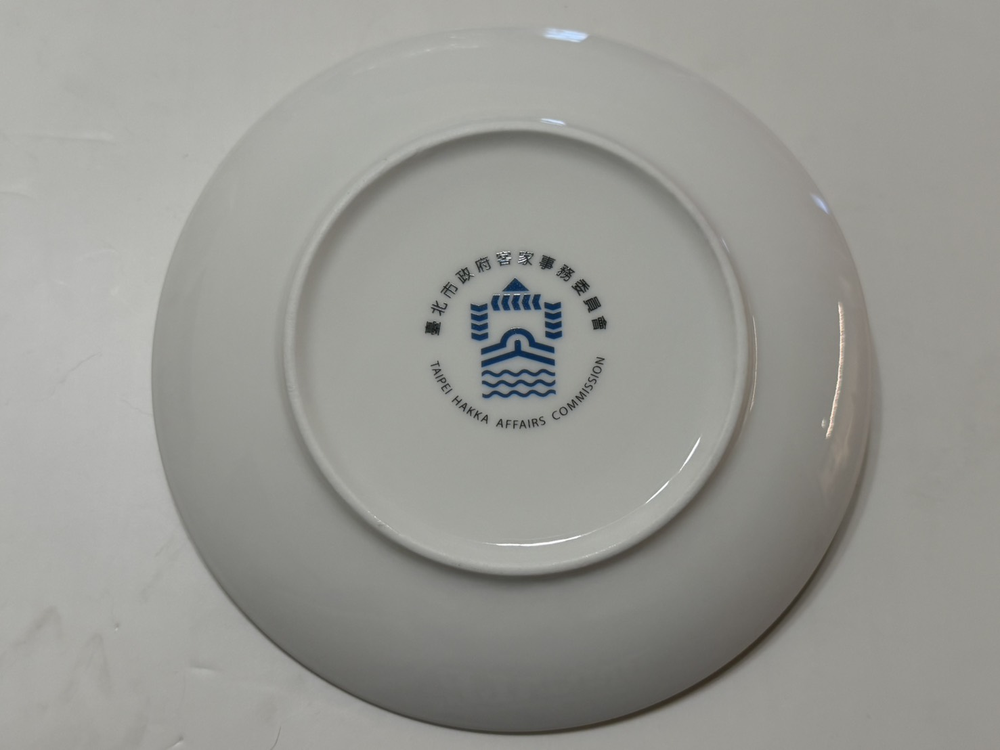
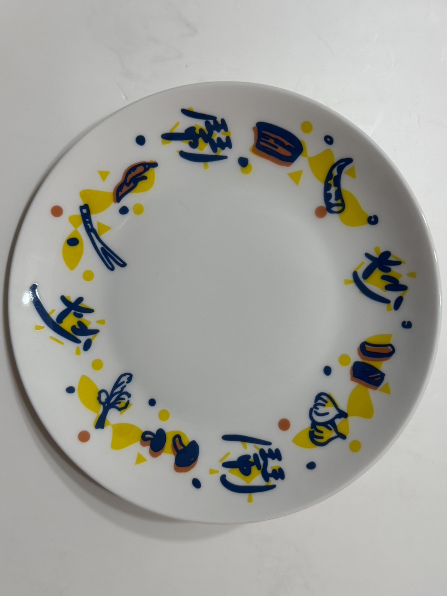

工藝組(盤)團圓的熱鬧 ‧ 客家小炒


設計理念
盤子以客家小炒為主題，透過圖案與色彩呈現出「家的味道」與「團圓的溫暖」。
- 光芒：象徵團聚、溫馨與共食的氛圍，盤面上的光芒宛如圍坐的燈火，陪伴家人朋友一同享用。
- 藍色食材元素：以插畫方式表現客家小炒的主要食材：魷魚腳、五花肉、辣椒、蔥、芹菜、香菇、大蒜、豆乾。這些食材看似普通，卻是客家人日常生活的精華。
- 炒炒鬧鬧：諧音雙關，展現團聚時的鬧熱煎煎和客家小炒的結合。
客家文化意涵
客家小炒經典滋味，感受團圓的熱鬧
客家炒肉是經典家常菜，利用隔夜食材或剩料快炒而成，反映了客家人「惜物、節儉與靈活」的精神。鹹香下飯，是最能帶來人情味的料理。
它不只是「一道菜」，更是團圓與分享的象徵。盤子上的光芒，象徵一家人圍聚的溫暖；食材圖案，提醒我們這道料理背後的生活智慧。
PROCESS / 工作側拍


設計製作: 夥紅創客團隊工藝組 | 王彤羽、馮瑜茜